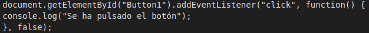
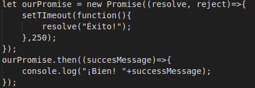
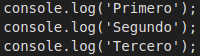
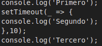

RESPON LES SEGUENTS PREGUNTES TEÒRIQUES:
1. Què és Vanilla Javascript?
Vanilla Javascript es com s'anomena al llenguatge de JavaScript quan no es utilitzat amb cap llibrería. Es a dir, es JavasCript pur.
2. Diferència els ECMA Script que pertanyen a Javascript i a Javascript Modern.
ECMAScript es una especifiació definida en ECMA-262 que crea regles, pautes, detalls i directrius que el llenguatge deu complir a l'hora de programar.
JavaScript implementa la especificació ECMAScript, i s'utilitza en el mateix llenguatge.
Hi han diferents EcmaScripts; ES6(2015), ES7(2016)... A partir del ES7 hi han alguns problemes en la utilització d'aquests, ja que per exemple, molts navegadors no ho entenen.
3. Qui va crear Javascript? De quina empresa era?
El creador de JavaScript va ser Brendan Eich. Brendan Eich trballaba en Silicon Graphics, i Netscape Communication Corporation. Temps després va desenvolupar JavasCript, que el va anomenar "Mocha" en un principi, després va ser reanomenat a "liveScript", i per últim, gràcies a la popularitat en mercat de Java, va aprofitar el moment i va renomenar-lo a "JavaScript".
4. Quina empresa hi ha actualment darrera de Javascript?
Actualment, JavaScript es troba oficial ment rere la organizació de Mozila Fundation, que peródicament afegeixen noves característiques al llenguatge.
5.Que es una arrow function? A quin ES apareix (quin any)?
Son una forma de definir funcions i figerets variables en la sintaxis d'un sol paràmetre. Amb això, no es necessari escriure els parèntesis ni claus.
Les arrow FUnction van apareixer amb el ES6, es a dir, a l'any 2015.
6. Què es un callback? Posa un exemple.
Un callback en JavasCript es quan una funció rep com a argument una altre funció, i l'executa. D'aquesta manera, la funció contenedora escull quan executar el callback. A continuació un exemple:

La funció EventListener s'utilitza com a callback que s'activa quan es clica en el botó "button 1".
7. Què és una promesa en Javascript (promise)? Posa un exemple. Explica també la difeència entre la programació síncrona i la programació asíncrona. posa un exemple.
Un Promise es un objecte que representa la finalització o falla d'una operació asíncrona i mostra el valor resultant.
Es a dir, el seu objectiu es associar controladors amb un eventual éxit o error d'una tarea asíncrona.
Un exemple sería:

La programació síncrone es quan tots els mètodes s'executen en un mateix fil. Es a dir, que mentre un procès d'execució no hagi finalitzat, altre no començarà. Un exemple sencill sería:

Per pantalla s'imprimiría un, i després que acabi, l'altre simultaneament. Es a dir, un comença quan l'anterior ha acabat.
Per altre banda, amb la programació asíncrona, els metodes poden ser executats en varis fils al mateix temps. D'aquesta manera mentre un metode s'estigui executant per una banda, un altre pot estar sent executat també a la vegada. Un exemple sencill sería:

Per pantalla s'imprimeixen com a 'primero' 'segundo' 'tecero' a la vegada, ja que amb el "setTimeout" es difireix l'execució en milisegons.